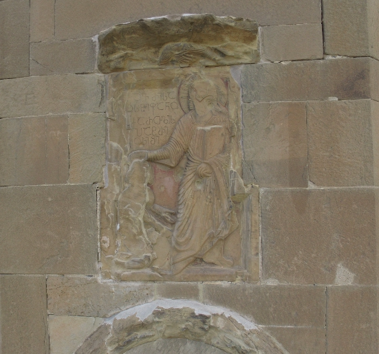

მცხეთის ჯვრის მოსახსენებელი სტეფანოს ქართლის პატრიკიოსისაJvari Monastery, Memorial of Stephen, Patrikios of Kartli
მცხეთის ჯვრის მოსახსენებელი სტეფანოს ქართლის პატრიკიოსისა
Jvari Monastery, Memorial of Stephen, Patrikios of Kartli
შინაარსი / Summary
მოსახსენებელი Memorial
ბიბლიოგრაფია Bibliography
- შოშიაშვილი, 1980, 159-160
- ბროსე, 1840
- ბროსე, 1851
- ბართოლომეი, 1887, 79
- ჟორდანია, 1892, 61
- ნატროევი, 1900, 18
- „მოგზაური“, #1, 1901, 23
- თაყაიშვილი, 1914
- ჯავახიშვილი, 1922
- ჩუბინაშვილი, 1926, 162
- ყაუხჩიშვილი, 2009, pg. 607-612
- შანიძე, 1935
- ჩუბინაშვილი, 1936, 108-109
- ჩუბინაშვილი, 1936, 26
- ამირანაშვილი, 1944, 168
- ჩუბინაშვილი, 1948, 142-143
- აბულაძე, 1949, 4-5
- შანიძე, იმნაიშვილი, 1949, 2
- თარხნიშვილი, 1950, 252
- MIA CSCO Vol 166
- კეკელიძე, 1960
- ჯობაძე, 1960, 114
- ამირანაშვილი, 1944
- ამირანაშვილი, 1963
- ამირანაშვილი, 1963
- ჩუბინაშვილი, 1936
- გამყრელიძე, 1967, 20
- აბულაძე, 1973, 12-13
- სარჯველაძე, დანელია, 1997, 32
კრიტიკული გამოცემა Interpretive Edition
ო(უარ) მაც -
ხოვრისა -
ო სტეფანო -
ს ქართლისა
5პატრი -
კიოს შ(ეიწყალ)ე
დიპლომატიური გამოცემა Diplomatic Edition
Ⴍ ႫႠႺ
ႾႭႥႰႨႱႠ
Ⴍ ႱႲႤႴႠႬႭ
Ⴑ ႵႠႰႧႪႨႱႠ
5ႮႠႲႰႨ
ႩႨႭႱ ႸႤ

მცხეთის ჯვრის მოსახსენებელი სტეფანოს ქართლის პატრიკიოსისა
{'default': 'ჯუარო მაცხოვრისაო, სტეფანოს ქართლისა პატრიკიოსი შეიწყალე. Holy cross of our Savior, have mercy on Stephen, Patrikios of Kartli.'}
{'default': 'ნოდარ შოშიაშვილის ქართული წარწერების კორპუსის მიხედვით # 68. ივ. ჯავახიშვილის აზრით, წარწერა VI საუკუნის ბოლოს არის ამოკვეთილი.\n იგი წერს, რომ ვახუშტის სტეფანოზ I ერისმთავრობის თარიღად 600-619 წწ. აქვს მიღებული.\n ეკლესიის ნამდვილი აღმშენებელნი სტეფანოზ ქართლისა პატრიკიოსი და დემეტრე ჳპატოსი ძმები ყოფილან (მოქცევაჲ ქართლისაჲ II, 724).\n სტეფანოზ I, ფულების პირველი ჯგუფის მიხედვით, 590-591 წ. ქართლის მთავრად შეიძლება ვიგულისხმოთ. დაახლოებით 604-605 წ., უკვე 606 წლამდე,\n აღმოსავლეთ საქართველოს მთავართა სათავეში სტეფანოსი აღარა ჩანს. პატრიკიოსობის მიღება მას მხოლოდ ბიზანტიის კეისრისგან შეეძლო იმ დროს,\n როდესაც აღმოსავლეთ საქართველო ბიზანტიის მეფის მფარველობის ქვეშ მოექცა, ე.ი. 591-604 წწ. შუა. ამ დროს უნდა მიეღოს დემეტრეს ჳპატოსობაც.\n აქედან გამომდინარე ეს წარწერები დაახლოებით იმავე ხანას, VI ს. უკანასკნელ ათეულს უნდა ეკუთვნოდეს. According to the Corpus of Georgian Inscriptions by Nodar Shoshiashvili the inscription #68. Iv. Javakhishvili considers that the inscription can be dated to the end of the VI century.\n He specifies that the historian Vakhushti has assigned 600-619 years for Stephen the I serving as Patrikios. The builder of the churches, Stephen the Patrikios of Kartli,\n appears to be the brother of Demetrius Hypatos (source: Conversion of Kartli (chronicle) II, 724).\n Stephen the I, on the basis of the minted coins of the period - 590-591 can be regarded the ruler of Kartli.\n His name disappears as a ruler of east Georgia from approx. 604-605, till 606 year. He could have received the rank of Patrikios only from the Caesar of\n Byzantium during the period when the east part of Georgia was under the domain of Byzantine empire i.e. 591-604 years. Demetrius Hypatos should have received his rank during the same period of time. Thus, the inscriptions should belong to the same period of the last decades of the VI century.'}
<div type="edition" xml:lang="ka" ana="mtavruli" xml:space="preserve">
<ab>
<lb n="1"/><w lemma="ქრისტე"><expan><abbr>ქ</abbr><ex>რისტ</ex><abbr>ე</abbr></expan></w>
<w lemma="განსუენება"><expan><abbr>გა</abbr><ex>ნ</ex><abbr>ო</abbr><ex>ჳ</ex><abbr>ს</abbr><ex>უ</ex><abbr>ენე</abbr></expan></w>
<w lemma="სულ">სოჳ<lb n="2" break="no"/>ლსა</w>
<name nymRef="ვაჩა">ვაჩაჲს<lb n="3" break="no"/>ასა</name>
<name nymRef="გურა"><expan><abbr>გო</abbr><ex>ჳ</ex><abbr>რაჲ<lb n="4" break="no"/>სასა</abbr></expan></name>
<name nymRef="მირა"><expan><abbr>მ</abbr><ex>ი</ex><abbr>რა</abbr><ex>ჲ</ex><abbr>ს</abbr><ex>ა</ex><abbr>ს</abbr><ex>ა</ex></expan></name>
</ab>
</div>